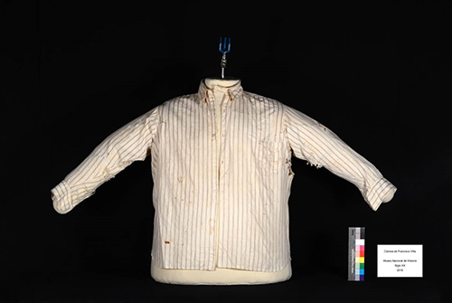
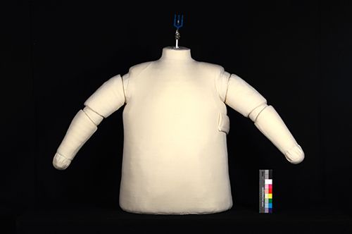
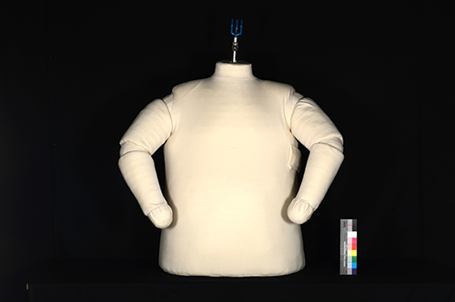
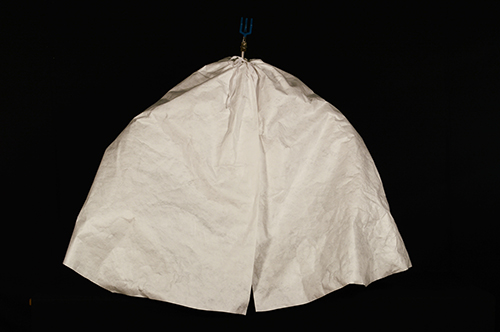
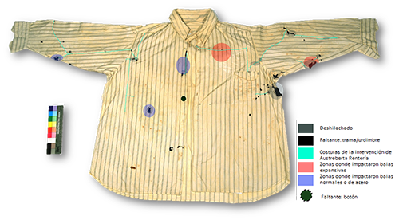
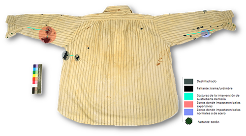
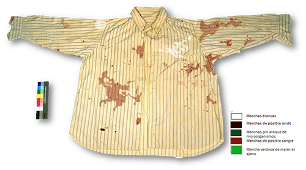
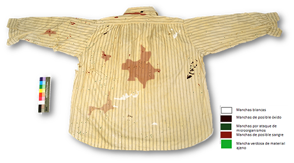

Camisa que portaba el Gral. Francisco Villa el día que fue asesinado
Alicia Nathalia Cañiza Pereida
Urani Correa Pérez
Inés del Ángel Mejía Martínez
La camisa que portaba el General Francisco Villa el día que fue asesinado en Parral, Chihuahua, el 20 de julio de 1923 (Katz, 2012), llegó al Seminario Taller de Conservación y Restauración de Textiles (STCRT) de la Escuela Nacional de Conservación, Restauración y Museografía “Manuel del Castillo Negrete” (ENCRyM), con la finalidad de ser estudiada e intervenida como parte de un proceso académico por las alumnas Alicia Nathalia Cañiza Pereida, Urani Correa Pérez, Valeria López Mancera e Inés del Ángel Mejía Martínez.

Figura 1. Fotografía del anverso de la camisa que portaba el General Francisco Villa el día que fue asesinado. Final de proceso, 2016.
A partir de la investigación realizada para contextualizar e identificar los materiales constitutivos y la técnica de manufactura de la pieza, surgieron distintas reflexiones que van más allá del aspecto académico como proyecto del STCRT.
La prenda forma parte del patrimonio cultural nacional, pues se le atribuye un importante valor histórico y asociativo debido a su relación con uno de los máximos representantes de la Revolución Mexicana, y por ser evidencia directa de dos momentos trascendentales en la historia de México: la entrevista que brindó Villa al periodista Regino Hernández Llergo (Villa Campa, 2016), hecho que significó, según varios historiadores, “la sentencia de muerte para Villa” (Katz, 2012); y el asesinato del General. Se trata de una pieza única que brinda información de la complexión y la particular forma de vestir de Villa durante su vida con Austreberta Rentería, en la hacienda de Canutillo. (Villa Campa, 2016)
Durante la autopsia las prendas fueron retiradas y entregadas a Austreberta Rentería, una de las esposas de Villa. Debido a los conflictos surgidos después de la muerte del General, provocados por los intereses personales de algunos individuos, los aspectos gubernamentales y legales dieron un giro repentino, y estas prendas fueron la única posesión tangible que ella conservó en recuerdo de quien fuera el hombre al que amó. Se cree que en un acto de afecto, ella lavó y zurció la camisa, tratando de minimizar los restos de sangre e impactos de las balas que pusieron fin a su historia juntos , convirtiéndose así en un recuerdo sentimental para la viuda del caudillo. En 1965, ella donó las prendas al Museo Nacional de Historia, en donde se encuentra actualmente.
Después de haber observado la camisa, se identificó la presencia de posibles restos de sangre, rasgaduras, deshilachados y faltantes, a consecuencia de los impactos de bala; sales o residuos de detergente, por la probable acción de lavado posterior al hecho; y manchas de óxido, ocasionadas probablemente durante su almacenamiento, además de las costuras mencionadas anteriormente.
Estas alteraciones forman parte de la segunda historicidad de la pieza y son evidencia directa del hecho histórico y de su trayectoria; por lo tanto, cualquier acción que se realice con la finalidad de retirarlas, afectaría la integridad del objeto, pues pensando en los futuros estudios o análisis que se lleven a cabo en la camisa, es importante no alterar y conservar esta evidencia en su totalidad.
Una de las contribuciones más relevantes de este trabajo ha sido la exhaustiva investigación histórica, sin la cual no hubiese sido posible relacionar el asesinato del General Villa con el estado de conservación de la camisa ni entender su manufactura o confirmar la intervención de Austreberta, hecho que ahora podemos aseverar como parte de su unidad potencial, aspecto importante que determinó la propuesta de intervención, en la cual se decidió que se respetaría la historicidad de la pieza, adaptándose a sus necesidades particulares (los impactos de balas y las costuras que realizó Austreberta). De tal manera, se diseñó un plan de conservación preventiva que garantiza la estabilidad del material y respeta las características y valores de la prenda, dando al espectador una lectura continua que enfatiza las alteraciones con carga histórica.
Este plan de conservación preventiva comprende la estabilización del botón y las roturas, así como un soporte de conservación y recomendaciones generales para su almacenamiento en el depósito de indumentaria y accesorios del MNH. El soporte de conservación articulado se diseñó de manera tal que fuera útil tanto para su almacenamiento como para su exhibición, pues otra observación realizada durante la investigación fue la frecuente disociación de la conservación-restauración y la museografía, campos que, a pesar de abordarse por separado, deben llevar cierta coherencia entre sí, generando un trabajo interdisciplinario y de mayor alcance que el periodo académico en el STCRT. Esto dio origen al desarrollo de una propuesta de conservación y exhibición para la colección de prendas que portó Villa el día que fue asesinado.


Figuras 2 y 3. Soporte de conservación articulado.

Figura 4. Soporte de conservación articulado con la funda de Tyvek®. 2015.
La investigación para la identificación de sangre en textiles es una importante aportación de este trabajo, pues, a pesar de no haber logrado identificar material hemático en la camisa, quedó manifiesta la necesidad de buscar pruebas más específicas para las particularidades de cada textil y material depositado, teniendo en cuenta que, procesos posteriores (en este caso el lavado y el tiempo), modifican por completo la evidencia. Por lo tanto, se deben buscar residuos diferentes mediante pruebas más puntuales. Como parte de una colección que comprende las cuatro prendas que portaba el General Francisco Villa el día que fue asesinado, la camisa comparte evidencias similares con el saco, la camisa interior y el pantalón. La búsqueda de pruebas específicas para la identificación de estas aportaría en la preservación, documentación e investigación, no sólo de la camisa, sino de las cuatro piezas. Se espera que este trabajo sirva como referencia para la propuesta de intervención de piezas con características similares, así como para el desarrollo de nuevas líneas de investigación.
Esquemas de alteraciones y deterioro
Escala 1:6

Figura 5. Anverso: Relación impactos de balas y faltantes. Por: Urani Correa Pérez, (2015).
Escala 1:6

Figura 6. Reverso: Relación impactos de balas y faltantes. Por: Urani Correa Pérez, (2015).
Escala 1:6

Figura 7. Anverso: Manchas. Por: Urani Correa Pérez, (2015).
Escala 1:6

Figura 8. Reverso: Manchas. Por: Urani Correa Pérez, (2015).
Referencias:
Katz, F.
(2012). Pancho Villa, Tomo 2. México: Era.
Villa Campa. (2016) Comunicación personal, 13 de octubre, 2016.
Para información complementaria: https://youtu.be/OoJSJXsV4sw
Dirección de Medios de Comunicación INAH
Como citar esta colaboración:
Apellido, nombre (año), “Título del artículo”, en Archivo Churubusco, año 1, número 2, disponible en -dirección en internet-, consultado -día, mes, año-.
Ir al cielo